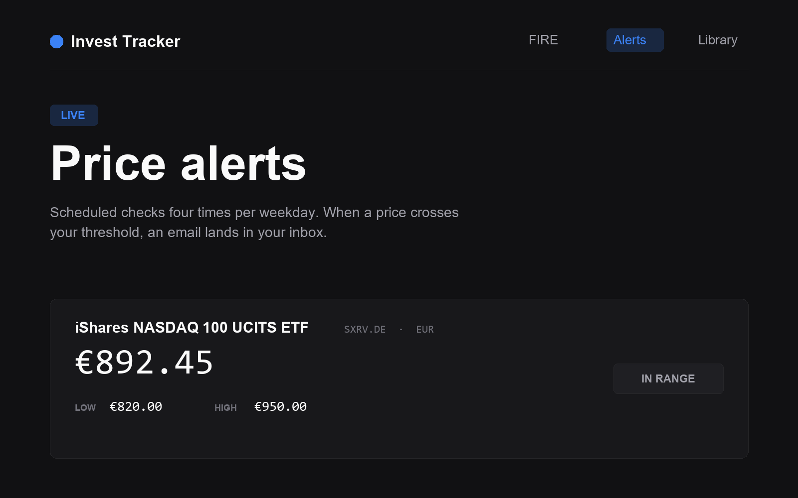

Aspiring Product Manager
Hui
Wang.
Building digital products that solve real problems — driven by curiosity, user empathy, and a love for creative tech.

Building digital products that solve real problems — driven by curiosity, user empathy, and a love for creative tech.
Credentials
Modules in Assembly
UX research, wireframing, prototyping, usability testing, and design systems.
AI product strategy, model lifecycle, roadmapping, and go-to-market execution.
Work
Real-world tools built through vibe coding with Claude AI — from concept to working product.

FIRE math, price alerts, and an investing library in one place.
A personal investing toolkit: a FIRE calculator for annual contribution targets, scheduled price alerts that email me when a watched ETF crosses my buy or sell threshold, and a growing knowledge base for curated reading and videos.
View Live →
Plans, goals, and learning maps in one place.
A full-stack productivity app that unifies daily scheduling, yearly goal tracking, web-based event discovery, and visual learning maps. Built to reduce planning friction.
View Case →
Receipts in, expenses and bookings out.
An internal ops tool for my cleaning side business. OCR receipt parsing across three languages, auto-categorized expense tracking, and a keyword-scored cleaner recommender.
View Case →
Renting in a foreign country, with trust built in.
A rental platform for foreign students in Taipei. 11 interviews and 26 surveys pointed to one core issue, trust, and every screen was rebuilt around it.
View Case →
Spotting scams with a buddy by your side.
A scam-detection learning app for older adults, built with Munich's DigitaleHilfe. A failed robotic-arm prototype sent us back to interviews, and the app was rebuilt around scam fatigue and loneliness as the real pain.
View Case →
Making a student aviation club's site easy to join.
A web redesign for TUM's oldest aviation student club. Joining requirements became a boarding-pass card, email applications were replaced with a direct CTA, and a "flight path" narrative tells the club's story to sponsors.
View Case →Beyond Work
I believe the best product thinking comes from living a full life outside the screen.
Framing moments and finding beauty in everyday scenes.
Turning ideas into physical things — because making is thinking.
Growing vegetables and learning patience from soil and seasons.
Through the Lens
Moments I've framed. Curiosity, with a camera.


Open to PM opportunities, collaborations, and interesting conversations.
✉ huicnvictor@gmail.com